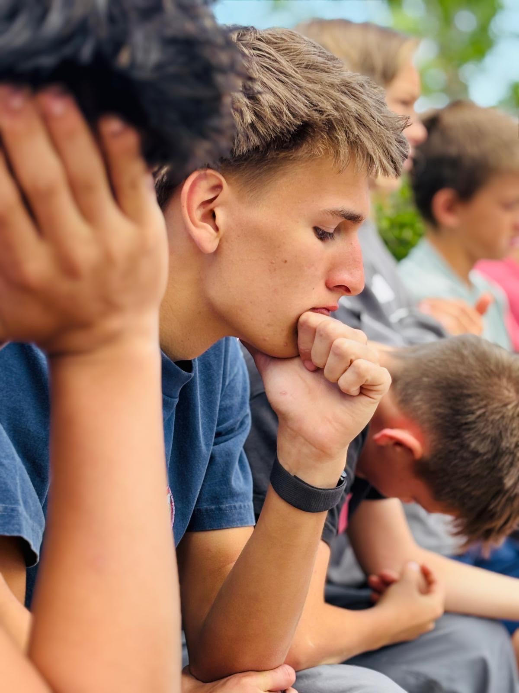
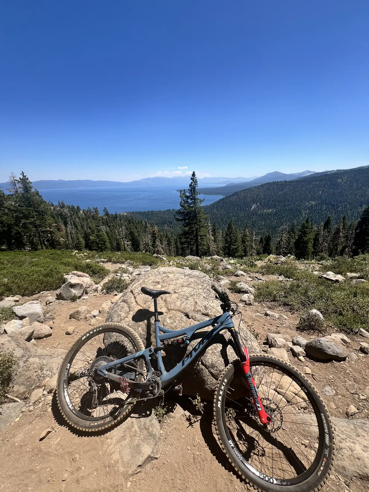
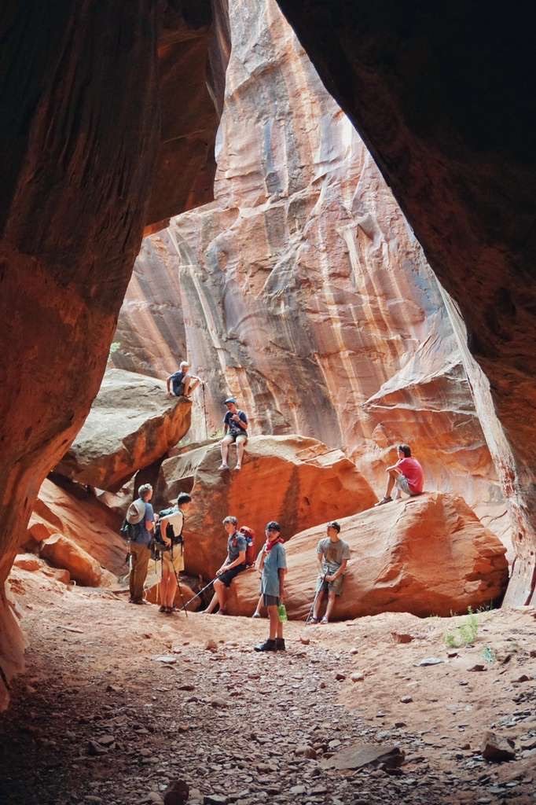
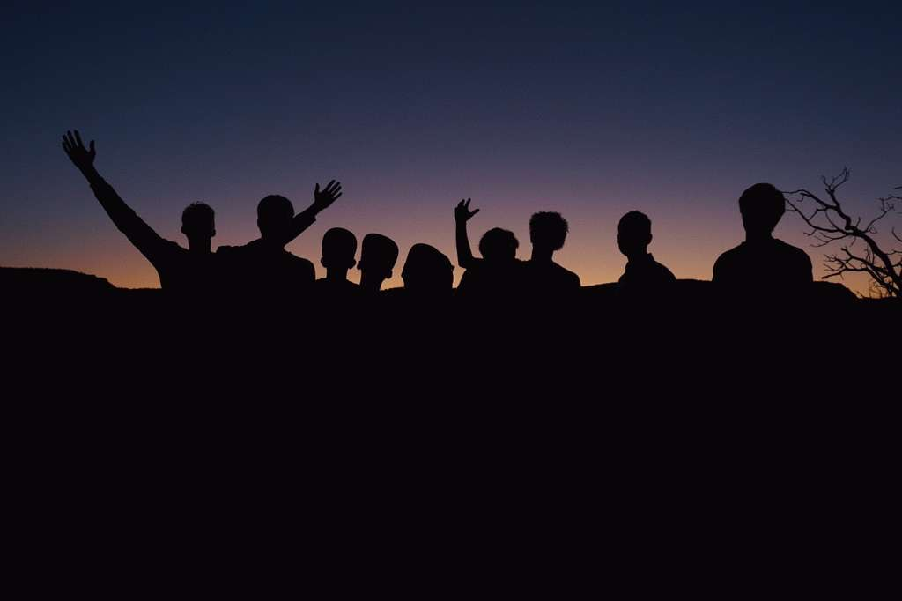
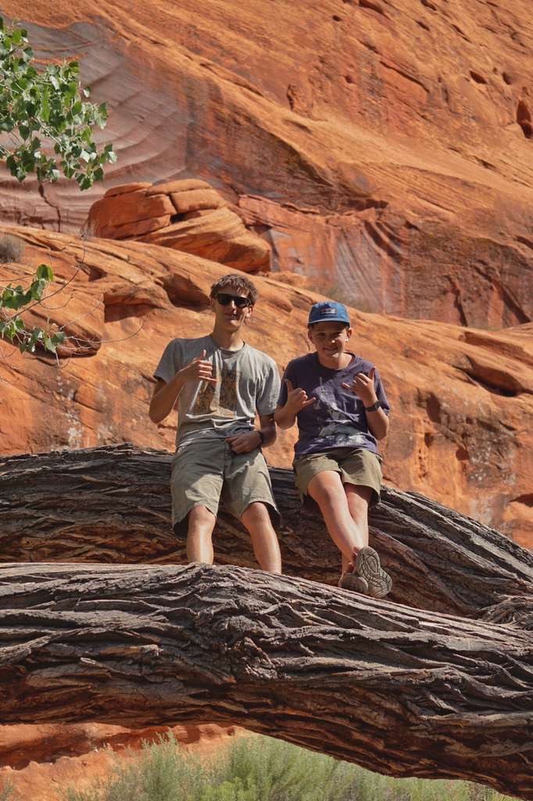
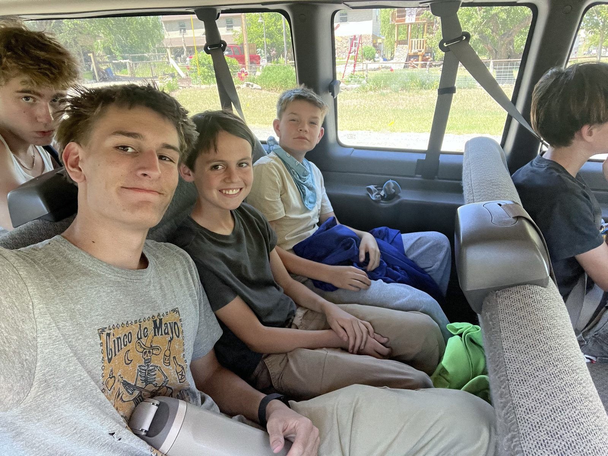

AI and computers
Local models, GPU servers and AI agents. I like understanding and running the infrastructure behind the tools I use.
I like building things I don’t completely know how to build yet.
That might mean running a local AI model, working on a new app, or spending a little too long figuring out how something works.
There’s also skiing, lacrosse, and a lot of reasons to get outside. Here’s a bit of both sides of my life.


I live in Bountiful, Utah, with the Wasatch right out the back door. I’m a senior at Bountiful High School. I skipped freshman year, so I’ll graduate at 17. Part of every school day I’m at the Davis Catalyst Center, studying cybersecurity, web development and AI engineering.
In the winter I compete in freeride with the Snowbasin Ski Team. Snowbasin is my home mountain. In the spring I play lacrosse for Bountiful, mostly at close defense and long-stick midfielder (LSM). I was a JV captain during my junior year.
The rest of the time I’m mountain biking, climbing, hiking or lifting. When I’m inside, I’m usually running local AI models or working on whatever project I’m currently way too deep into.
I spent summer 2025 as a camper at Birch Creek Service Ranch in Spring City, Utah. In summer 2026 I came back as a counselor.
Mornings were work crews, doing service for people in the area. Afternoons were activities, and weekends were backpacking trips.
The biggest thing I took from it is that you can be whoever you want to be. You show up for three weeks and you barely know anyone there. Nobody has decided who you are yet, so you get to choose what kind of person you’ll be.
That’s true after camp too. Anywhere you go, you can choose to be kind and to serve people.




Local models, GPU servers and AI agents. I like understanding and running the infrastructure behind the tools I use.
Competing with the Snowbasin Ski Team’s freeride program, plus tricks and freestyle whenever I can.
Long pole for Bountiful, at close defense and LSM. I served as JV captain during junior year, with practices, lifting and extra sessions in the fall.
Still figuring it out, but here’s the rough idea.
Bountiful High, Catalyst, freeride at Snowbasin, and lacrosse in the spring.
Time to build real AI and software projects, try some entrepreneurship, and leave plenty of room for skiing.
Not locked in yet. I want to figure out what I actually want to work on first.
I earned the certifications through school. You can verify each one on Credly.